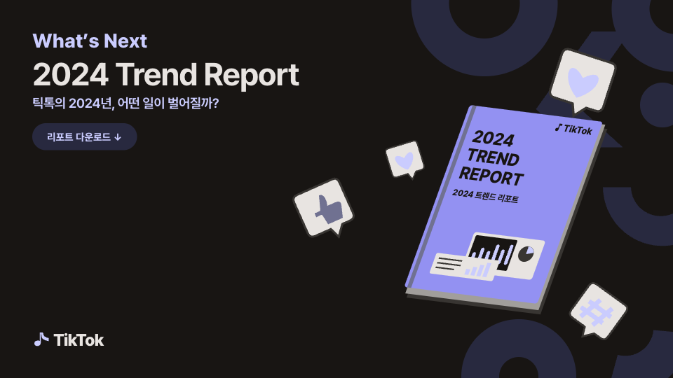
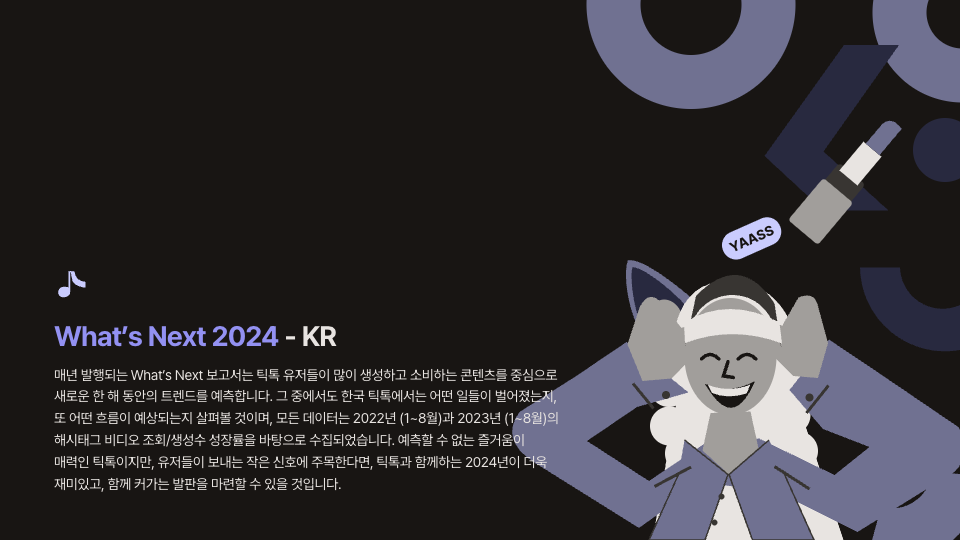
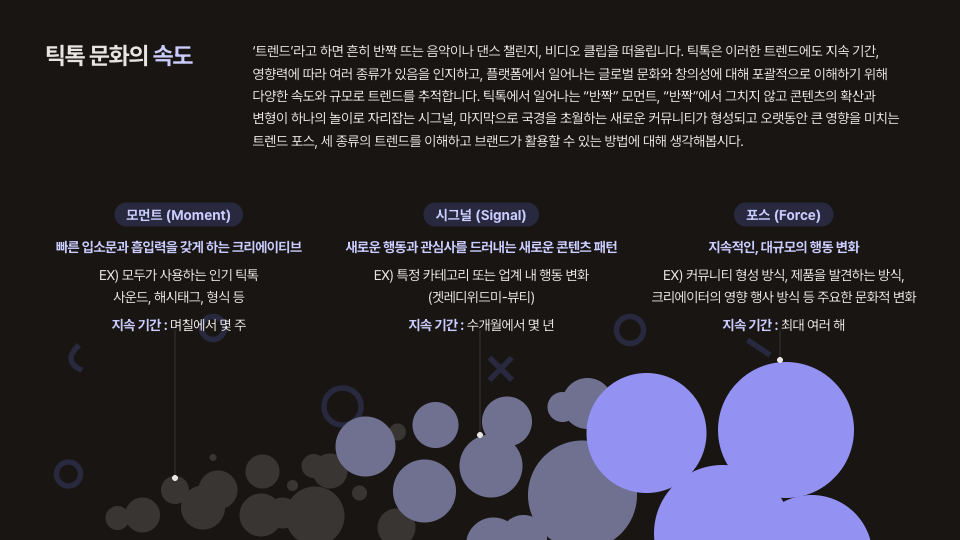
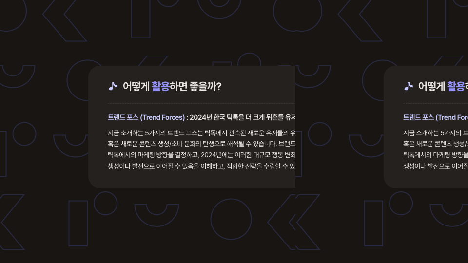
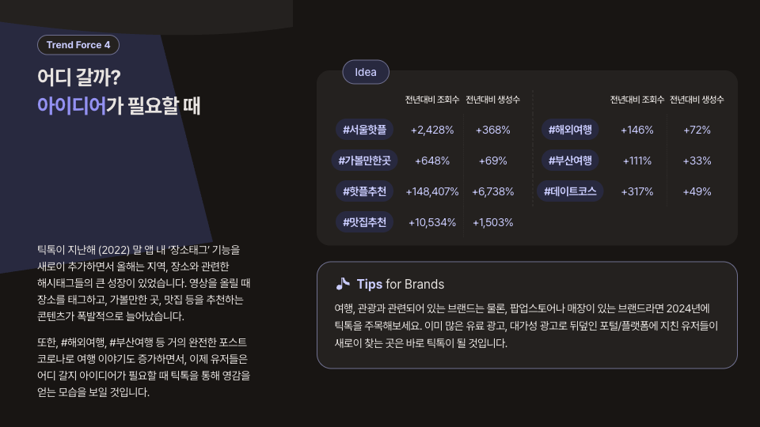
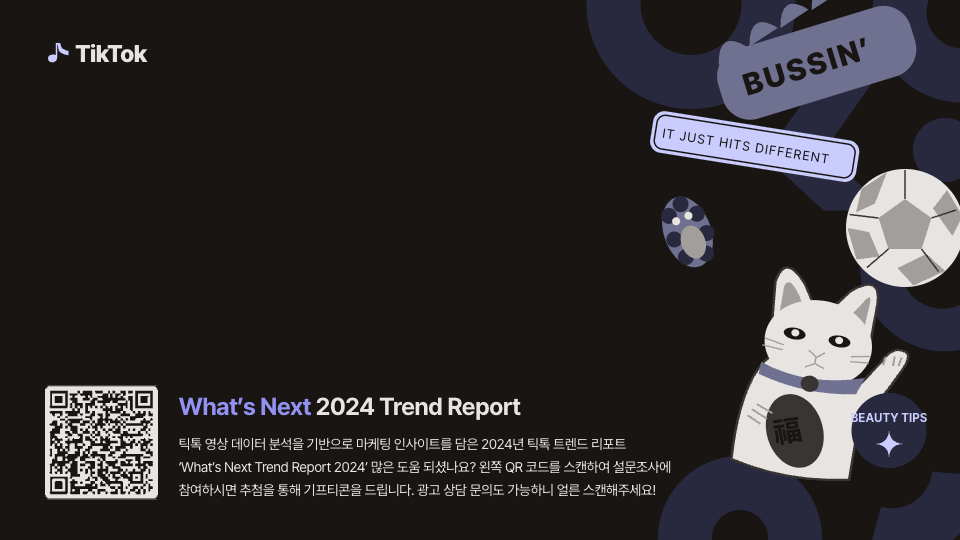

What’s Next · 2024 Trend Report
좌측 타이틀 · 우측 입체 보고서 · 좌상단 3단 제목과 다운로드 캡슐, 우측 기울어진 보고서와 반응 아이콘을 배치한 표지.

What’s Next 2024 - KR
하단 소개문 · 우측 인물 콜라주 · 좌측 하단의 보고서 소개와 우측 웃는 인물·아보카도·립스틱 콜라주를 재구성.

틱톡 문화의 속도
3열 개념 비교 · 점진적 버블 · 상단 제목·설명, 중단 세 트렌드 분류, 하단 크기가 커지는 버블로 지속 기간을 시각화.

어떻게 활용하면 좋을까?
패턴 배경 · 중앙 설명 패널 · 외곽 기하 패턴과 중앙 가로형 둥근 패널에 트렌드 포스 활용 방법을 설명.

어디 갈까? 아이디어가 필요할 때
좌측 이야기 · 우측 데이터 및 팁 · 좌측 트렌드 포스 4 소개와 우측 7개 해시태그 성장률 표, 하단 Tips for Brands 박스.

What’s Next 2024 Trend Report · 마무리
좌하단 QR 안내 · 우측 소품 콜라주 · 좌상단 로고, 우측 스티커·축구공·마네키네코, 좌하단 QR과 마무리 안내를 배치.